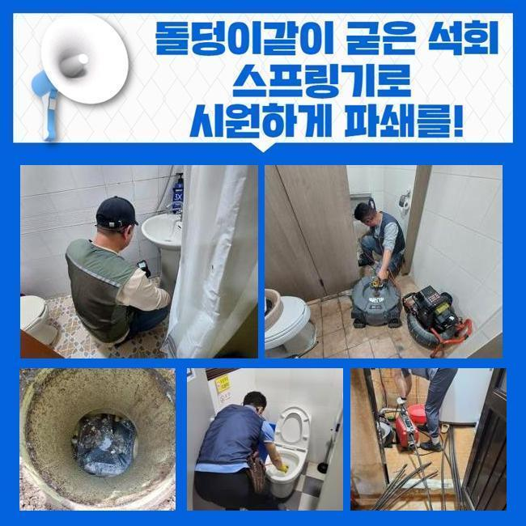
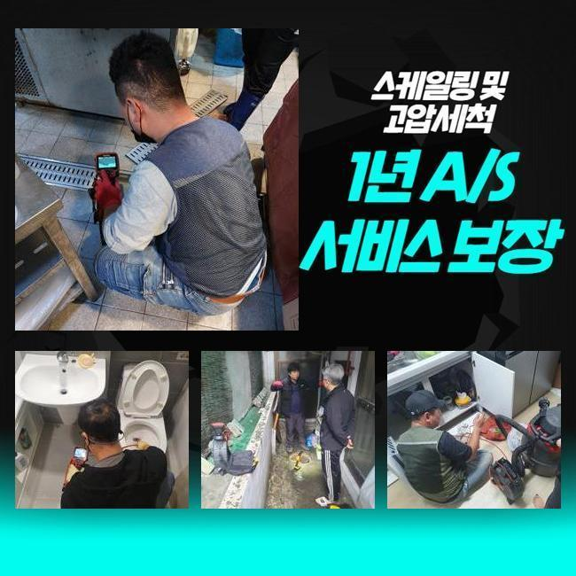
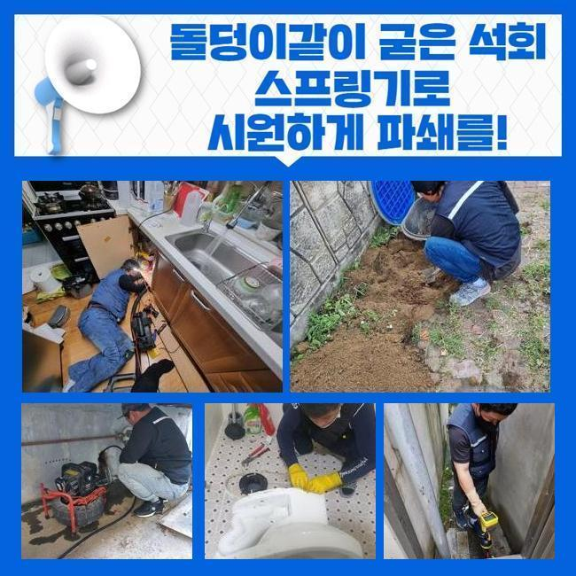
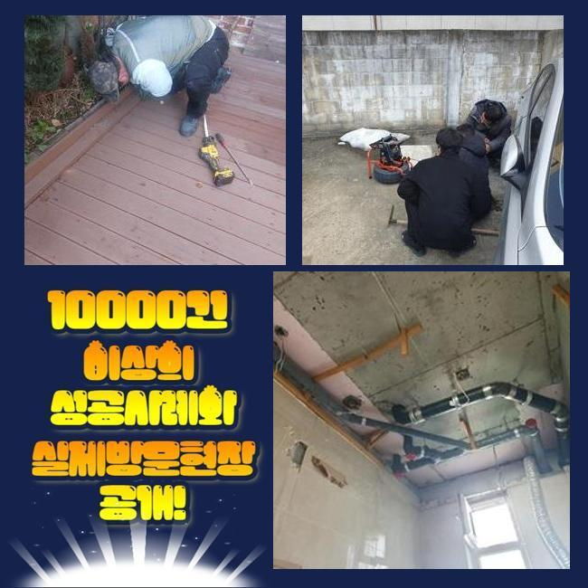
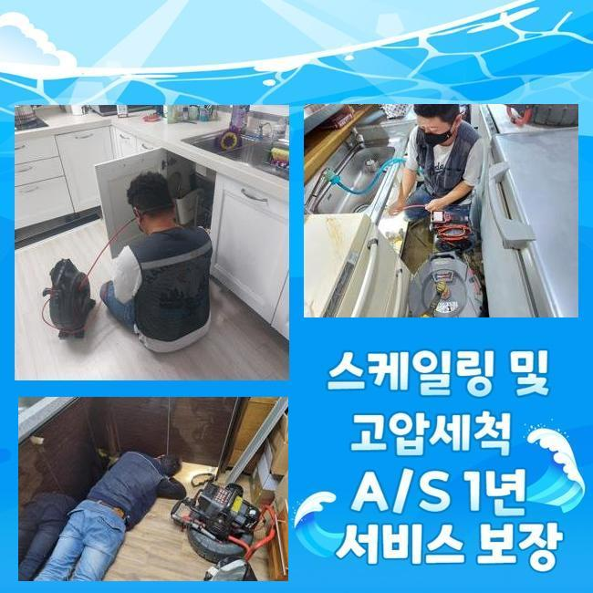
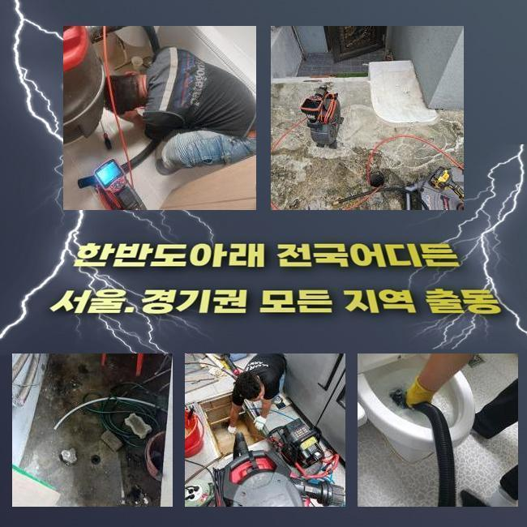
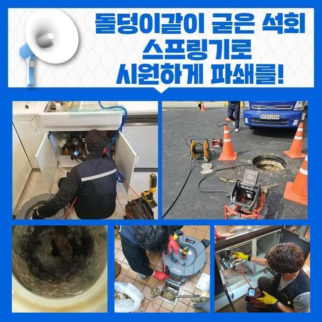

🏠 천안 두정동씽크대배수구역류 부성1동 집수정청소 설비업체
천안 부성1동 싱크대막힘 전문 시공 후기

📋 작업 개요
- 위치: 천안 부성1동, 부성1동, 천안
- 서비스 유형: 싱크대막힘, 하수구막힘, 배관막힘, 집수정막힘, 역류해결, 배관청소, 고압세척, 설비공사, 악취차단
- 작업 일시: 2025. 4. 14. 13:02
- 업체명: 하수구수사대 (010-5615-2118)
🔍 문제 상황
천안 두정동씽크대배수구역류 부성1동 집수정청소 설비업체
저희팀은 배수시설과 관련한 여러가지 수선을 처리하는 회사입니다
기술자가 상시대기중에 있으며 의뢰인분이 직면하신 고장상황에 신속하게 조치해드립니다
금번에는 주방배관막힘 처리 케이스를 말씀드리도록 할게요
그저께 의뢰를 해주셨던 위치는 일반상가입니다
주방쪽 배수구가 막혀버렸으며 설상가상으로 화장실쪽의 통수도 제대로 안돼 문제가 되는 상황이었습니다
해당지역쪽에서 근무중이었던 담당자가 바로 이동하였으며 알맞은 방책을 수행하기로 하였답니다
주방배수구 정체와 내부화장실의 막힘발생 지점은 백숙 체인점이었어요
주방시설에서는 음식찌꺼기의 유입량이 많아 관로체증이 빈번히 발생해요
그래서 식당운영을 하고계신 경우엔 그와 관계된 여러종류의 조처를 실행하시곤 하죠
평상시 조심스럽게 쓰셨더라도 갑작스럽게 단단한 물체가 들어간다면 물막힘이 쉽게 발발하므로 관리가 수월하지 않아요
금번 소개드릴곳은 어떤 원인으로 체증이 발발한 것인지 신밀하게 파악하도록 합니다
우선적으로 주방의 배관시설부터 점검하기로 했죠
음식점은 보통가정의 배수시설과는 상이한 모습을 띠며 트렌치설비의 크기도 굉장히 큰데요

🔎 원인 분석
💡 전문가 진단: 정밀 진단 장비를 사용하여 슬러지의 고착 여부를 판명하고 타격/세척 작업을 실시했습니다.
그렇기에 처치가능한 오폐수의 양또한 늘어나게 되는건데요
그러므로 일반적인 주거지의 시험방법을 토대로 공사여부를 결정내려서는 제대로된 파악이 어렵고 그것에 적합한 물의양을 넣어서 분명하게 정황을 체크해야해요
이런 공정을 올바르게 하지 않고 넘어가버린다면 몇달후에 사태가 또다시 일어날수가 있어요
배수기능을 확인하였고 정상적으로 물빠짐이 진행되지 않는걸 파악하게 되었죠
천천히 소멸되기는 하였으나 식당운영을 재개하기엔 힘겨운 상태였어요
그다음은 관로안으로 배관내시경을 넣어서 분명하게 정황을 점검해보기로 했습니다
기름성분은 물론이고 크고작은 석회물질들이 하수관속을 채우고 있었답니다
관로 속에 들어가면 곤란해지는 물질들이 누증되어서 문제가 생긴거예요
이것들과 연관된 배수관에 혼입되어선 안될 사안을 알려드리겠습니다
해당 사안을 숙지해주기실 바라며 일상생활에 적용해보시길 당부드려요
기름슬러지가 차가운물과 만나게되면 굳어지고 때문에 하수관에 달라붙을 확률이 크죠
그렇기 때문에 반드시 휴지를 닦은뒤에 세척하는게 필요한겁니다
또한 기름을 별도로 처리하는 과정도 능동적으로 쓰시는게 합당합니다
최근 많이 이용하는 원두커피에서 발생되는 가루들도 하수도막힘을 야기할수 있죠
원두커피가루는 기름성분을 흡착시키는 특징이 있기에 관로내부에서 엉기기 쉽죠

🔧 작업 과정
그렇기에 일반쓰레기로 분류하여 처분하는게 바람직해요
설거지를 하는도중 그릇에 잔류하는 음식물을 싱크대에 투입하면 배관면에 누증될 가망이 크답니다
조미성분은 부피가 미세하기에 트랩을 관통하여 하수관으로 이동할수가 있어서 별도로 버리는것이 바람직해요
조리도중에 남게된 전분도 관로에 곧바로 폐기한다면 응축되어서 배관정체를 유발하기 쉽습니다
그렇기 때문에 이러한 것들은 필수로 분리수거해서 배수시설을 안정적으로 관리하는게 좋겠습니다
내시경카메라를 통해 하단부분까지 조사하였더니 공용관로도 트러블이 일어났을거라 판단되었으며 추가적으로 검정하기로 결단내렸죠
우선적으로 문의하신 분의 주방공간의 하수관 청소를 속행해야겠죠
닭요리를 하는곳이라 다른종류의 식당과 상이하게 기름성분이 다량으로 누증된 상태였고 그외 음식쓰레기들까지 합쳐져 혼잡한 상태였습니다
그상황이 장시간 유지되면서 배관과 하나가 돼버린 국면이었어요
파쇄용 공구를 사용하여 본 지점의 초반 세정시공을 실시하였죠
부속품은 상황에 따라서 교체하여 시공할때도 있는데 통상적으로 쇠줄로 만들어진 체인을 쓰는데요
가느다란 노즐에 해당하는 관통헤드가 결합돼있고 배수관에 밀어넣은뒤에 가동하면 고속도로 돌아가면서 잔류하는 배관이물들을 분쇄하는 수리를 수행하죠
보통은 샤프트기기를 활용하면 어지간한 물질들을 떨어져나갑니다
그렇지만 앞서서 안내해 드린바대로 이건물은 중앙관로가 이물질이 전가되었다는걸 파악한바가 있는데요
그러한 경우엔 개별배수관 처리만으로 근원적인 트러블이 없어지지 않아요
세정된걸로 오판될수도 있겠지만 중앙의 배관이 차단되었다면 결과적으로 또다시 관로가 막히게 된답니다
개별배관 청소를 끝마친뒤 지하실쪽에 자리잡은 공용관을 진단하기로 합니다
배관내시경을 밀어넣었더니 곳곳에 쌓인 녹황색의 노폐물들이 상당한 상태였죠
장기간에 걸쳐 쌓인걸로 보였으며 크기도 크다보니 폐기물도 많아졌던겁니다
이부분을 고압물청소를 통하여 정리하기로 결단했고 2시간이 넘게 소제를 실행했습니다
횡주관까지 분쇄정비를 마친다음 고객님의 삼계탕집으로 가서 배관 물내림과 화장실의 배수구까지 진단공정을 수행하였더니 정말 깔끔하게 통수가 되어서 시원하게 빠져나갔답니다
금번에 처리한 장소는 엄청난 기름찌꺼기와 석회물질들이 주 원인이었고 지하공간의 횡주관까지 막혀있었기에 더더욱 사태가 심중했답니다
그것을 샤프트장비와 물세척공정으로 짜임새있게 처치하였으며 개운하게 개통된 정황을 마주할수 있었어요
시공을 끝내고 생활중에 발발가능한 막힘상황들과 알아두면 요긴한 하수도관리 절차등을 정리해서 안내하였습니다


✅ 작업 완료
그리고 전화로 한번더 물어보셨기에 살뜰하게 설명해 드렸어요
시공을 그릇되게 이행하면 얼마뒤 하수관에 상당한 문제점이 발생가능합니다
그러하기에 정확한 시공방식을 적용해서 정비하려는 기본방침이 중요해요
그러므로 여러가지의 장비들을 기반으로 공정을 수행하여야 한다는걸 강조해 드려요
식당에서 갑자기 하수관이 막히면 운영상에 커다란 문제가 생기겠죠
따라서 약간이라도 트러블이 목도되었다면 망설이지말고 전문가에게 연락하시길 당부드립니다




⚠️ 주방 싱크대 배관 막힘 예방 수칙
- ✅ 기름기가 묻은 식기나 프라이팬은 설거지 전 키친타올로 반드시 기름때를 닦아내세요.
- ✅ 주기적으로 싱크대 개수대에 뜨거운 물을 가득 받아 한 번에 내려 배관 내부 기름을 씻어내세요.
- ✅ 배수구 거름망을 미세한 필터로 사용하시고 음식물 찌꺼기가 틈으로 새어 들지 않게 관리하세요.
- ✅ 베이킹소다와 식초를 뜨거운 물과 함께 일주일에 한 번씩 부어주면 배관 살균과 막힘 예방에 좋습니다.
💡 핵심 정리
- 확실한 장비 작업(내시경 점검 및 샤프트 스케일링)으로 원인을 뿌리 뽑습니다.
- 작업 후 1년 이내에 동일한 부위 재발 시 100% 무상 A/S 서비스를 보장합니다.
- 서울 · 경기 · 인천 전 지역에 24시간 언제든 긴급 출동할 수 있도록 항시 대기 중입니다.
❓ 자주 묻는 질문 (FAQ)
🚨 천안 부성1동 싱크대막힘 문제로 고민이신가요?
정확한 원인 진단과 확실한 시공으로 재발 없는 해결을 약속드립니다.
24시간 긴급 출동 | 서울 · 경기 · 인천 전지역 | 1년 내 재발 시 무상 A/S